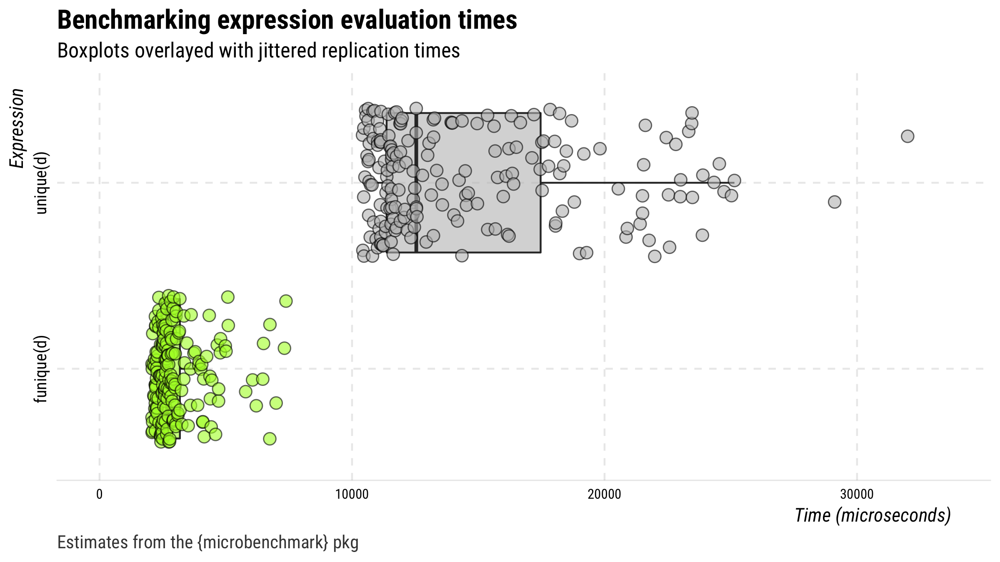
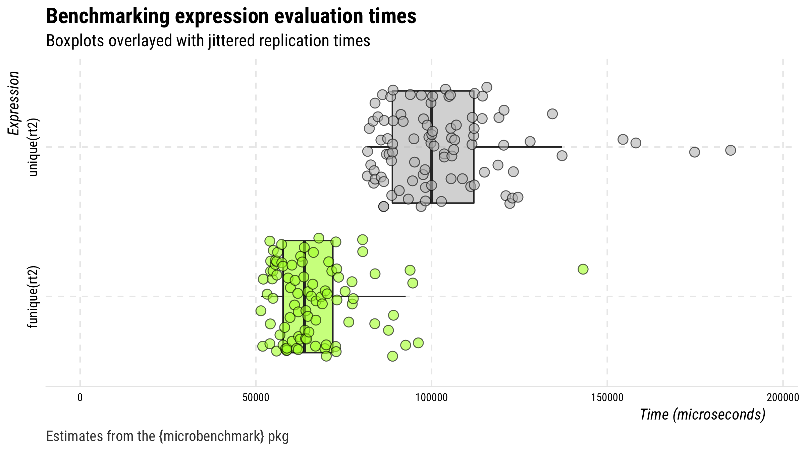

⌚️ A faster
unique()function
Usage
There’s one function funique(), which is the same as base::unique() only optimized to be faster when data contain date-time variables.
Speed test: funique() vs. base::unique()
The code below creates a data frame with several duplicate rows and then compares performance (in time) of funique() versus base::unique().
## set seed
set.seed(20180812)
## generate data
d <- data.frame(
x = rnorm(1000),
y = seq.POSIXt(as.POSIXct("2018-01-01"),
as.POSIXct("2018-12-31"), length.out = 10))
## create data frame with duplicate rows
d <- d[c(1:1000, sample(1:1000, 500, replace = TRUE)), ]
row.names(d) <- NULL
## check the output against base::unique
identical(unique(d), funique(d))
## bench mark
(m <- microbenchmark::microbenchmark(unique(d), funique(d),
times = 200, unit = "relative"))
## plot
plot(drop_hl(m, n = 4)) +
ggplot2::ggsave("man/figures/r1.png", width = 8, height = 4.5, units = "in")

Here’s another test this time using duplicate-infested Twitter data.
## search for data on 100 tweets
rt <- rtweet::search_tweets("lang:en", verbose = FALSE)
## create duplicates
rt2 <- rt[sample(1:nrow(rt), 1000, replace = TRUE), ]
## benchmarks
(mb <- microbenchmark::microbenchmark(
unique(rt2), funique(rt2), unit = "relative"))
## make sure the output is the same
identical(unique(rt2), funique(rt2))
## plot
plot(drop_hl(mb, n = 4)) +
ggplot2::ggsave("man/figures/r2.png", width = 8, height = 4.5, units = "in")
